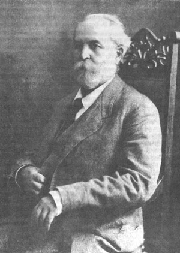

Л.Г. Климанов «ВИЗАНТИЙСКИЕ ОТРАЖЕНИЯ» В СФРАГИСТИКЕ
2. О ПРОИСХОЖДЕНИИ КОЛЛЕКЦИИ Н. П. ЛИХАЧЕВА И О ЦЕЛЯХ ЕЕ ПУБЛИКАЦИИ
А. Печати, по своей юридической природе предназначенные составлять единое целое с теми документами, для аутентикации которых они служили и к которым были изначально приложены или привешены, с научной точки зрения вроде бы не должны рассматриваться сами по себе. Но...печати, главным образом металлические, порой теми или иными судьбами оказываются отделенными от документов. Документ может истлеть в земле, а печать затем попасть в руки археологов и далее - в музей. Случается также, что печать отделяется от документа, находившегося в ведомственном или частном архиве или волею случая попавшего в руки антиквара или коллекционера. В этом случае печати сохраняются значительно лучше, особенно если иметь в виду хрупкость свинца, и в антикварных лавках эти невзрачные кружки металла охотно приобретают и коллекционеры, и комиссионеры музеев. Отдельные разрозненные печати складываются в музейные собрания и частные коллекции, и хранящиеся там отделенные от документа печати нуждаются в изучении, определении и публикации, а эти занятия, в свою очередь, требуют кропотливой, несуетной, сложной и длительной «мозаичной, - по выражению Б. А. Пан- ченко, - работы, требующей тщательности и терпения» и имеющей мало общего с тем, что Э. Бернгейм назвал «тщеславием собирателей».
Одной из лучших частных сфрагистических коллекций в мире и единственной в своем роде в России было продуманное собрание тщательно подбиравшихся памятников, которое состояло из нескольких тысяч византийских, русских, западноевропейских, итало- византийских и других булл, а также копий, подделок и муляжей и в котором был представлен весь ареал распространения и применения вислых металлических печатей на протяжении всего средневековья и Нового времени эта коллекция была создана за четверть века упорной систематической работы русским ученым-историком и коллекционером Николаем Петровичем Лихачевым (1862-1936).
назад | дальше
|